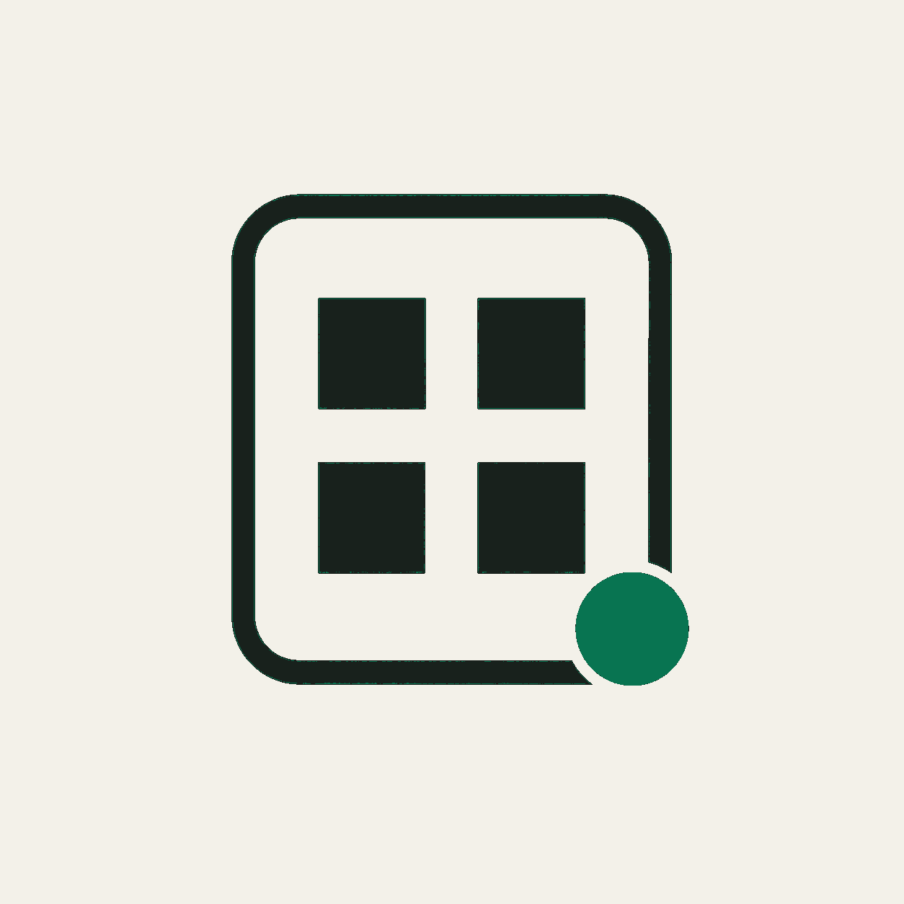
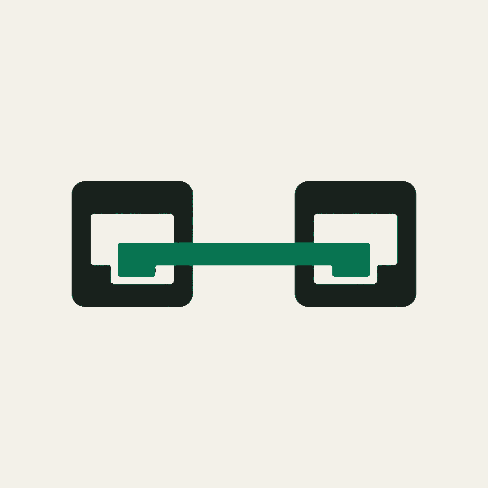
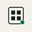
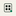
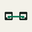
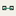

Artifact Publisher
Publish and share durable artifacts.
Visual review
Warm paper, restrained ink, and emerald signals carry the same visual language as the live directory.
Publish and share durable artifacts.
Review and approve durable lessons.

Browse tools and observed status.

Orient around reachable ports and listeners.


Directory

Network